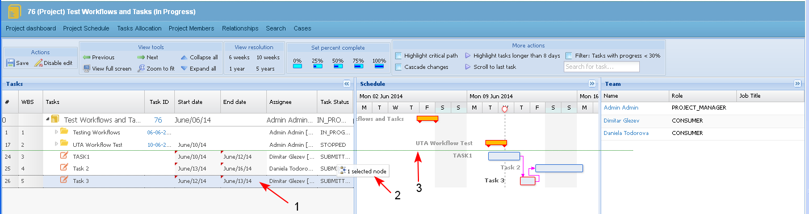
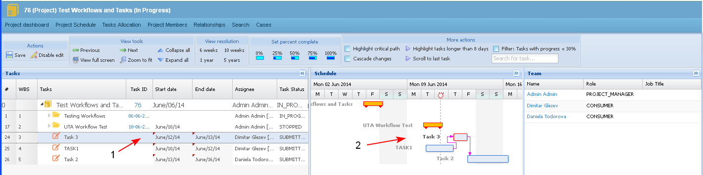

The user is able to move tasks up and down into the project schedule.
Preconditions
- The "Project" type task could not be moved
- Sub-tasks of "Workflow" type summary task could not be moved
- To move a task the user must have corresponding permissions.
- The user selects a task and drags it up or down in the project schedule.
- if the selected task is a summary task, then it is moved together with all its sub-tasks.
- If the selected task is leaf (standalone) task, then it is moved alone up or down (1-2-3). In the tool tip (2) appears message whether the operation is possible or not.
- If the selected task has links to other tasks (predecessor, successors) the task is moved together with its links.

- The user drops the selected task in the new position (1-2).

- When a task is in status different than "Submitted", then the "Move" action on that task in the Project Schedule changes the relationship of type "Part of" of that task.
Example:
- Task1 is Part of Case A.
- Task1 is moved in the PS and becomes a child of Case B.
- A new relationship is created: Task1 is part of Case B and the existing relationship between Case A and the task is deleted.